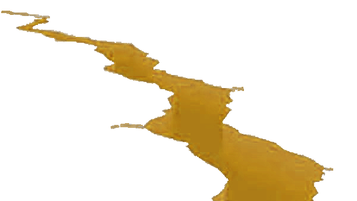
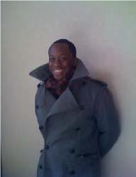

Mission Projects
2013 Mission Projects (2014 TBD):
American Baptist Churches of the Central Pacific Coast presents:

Friday and Saturday, September 12-13, 2014
At Portola Baptist Church (San Francisco, CA)
Schedule is tentative and subject to change without notice.
| Friday | |
| 6-7pm | Registration |
| 7pm | Games |
| 9pm | Worship Session #1 |
| 10pm | Small Group Session #1 |
| 11pm | Snack |
| 11:30pm | Free Time |
| 12am | Lights Out |
| Saturday | |
| 8am | Breakfast |
| 8:30am | Worship Session #2 |
| 9:30am | Small Group Session #2 |
| 10:30am | Head to Mission Project (lunch is included) |
| 4pm | Small Group Session #3 |
| 5pm | Dinner |
| 6pm | Worship Session #3 (+ Testimonies) |
| 7pm | Return to your primary mission field (home) |
Past Speakers
In the natural realm, a 'quake' is a powerful movement of the earth's surface. In the spiritual realm, this movement may sometimes be viewed as both initiated by, and used for the glory of, God.
It is this sort of movement that we seek among God's youth. It is both the
transformation of the individual's heart as well as the reformation of a community.
It is the movement of God amongst God's people as well as an invitation to join in
that movement.
A movement of this magnitude necessarily involves one's whole self. The weekend has
been prayerfully designed to engage our youth at all levels. The mind is engaged
through message times and times of reflection; the heart is engaged through times of
worship (by music) and testimony; our 'strength' is engaged during the missional
projects; and the soul is nurtured throughout the whole time by life in community -
including the times of play.
God, come move in a mighty way amongst us, and in us, and through us. Amen. Even so,
come, Lord Jesus (Revelation 22:20).
Admin and Logistics
Karen Yee - New Life Christian Fellowship
Katie Choy-Wong - New Life Christian Fellowship
Chad Plantenberg - Community Baptist Church of San Mateo
Publicity
Chad Plantenberg - Community Baptist Church of San Mateo
Randy Fong - New Life Christian Fellowship
Tashi Vedel - New Life Christian Fellowship
Site and Food
Gloria - Portola Baptist Church
Elias Soto - Portola Baptist Church
Cristhiam Castro - Primera Baptisa de la Ciudad
Mission Projects
Cristhiam Castro - Primera Baptisa de la Ciudad
Mervin Castro - Primera Baptisa de la Ciudad
Tina Atencio - First Baptist Church of Alameda
Small Groups
Katie Choy-Wong - New Life Christian Fellowship
Tashi Vedel - New Life Christian Fellowship
Games and Recreation
Anthony Carnero - First Baptist Church of Alameda
James George - First Baptist Church of Alameda
Ally Cospin - Portola Baptist Church
Worship and Miscellany
Dan French - Allen Temple Baptist Church
Elias Soto - Portola Baptist Church
Karen Yee - New Life Christian Fellowship
Lone Lazum - Oakland Burmese Mission Baptist Church
Moa Imchen - Alliance of Asian American Baptist Churches
Past Leadership Teams


Contact us at: info@youthquake.us
Return to Speaker Bio Main Page
Rev. Marie Onwubuariri Marie self-defines as a 1.75 Filipina-American - born in the Philippines, raised in the U.S.,
but not quite the same as what society calls a 1.5 gen immigrant (ask her if you want more info!)
This journey of self-identity emerged for her a passion and calling to be an effective
intercultural leader, bridging between people of different generations, ethnicities, and walks of
life. She was raised in an American Baptist church in New York City, and after a career in the
retail industry she followed God's leading to devote her life to following Christ. Marie comes
with her ministry experiences as an active lay person, a youth director, a young adult minister,
a senior pastor, an emerging leader in the American Baptist denomination, and currently loves
helping people discern their call as the Director of Admissions at the American Baptist Seminary
of the West in Berkeley. She lives in San Pablo with her husband, two young kids, and beloved dog.
She enjoys a variety of music, photography, and a good game of volleyball.
Marie self-defines as a 1.75 Filipina-American - born in the Philippines, raised in the U.S.,
but not quite the same as what society calls a 1.5 gen immigrant (ask her if you want more info!)
This journey of self-identity emerged for her a passion and calling to be an effective
intercultural leader, bridging between people of different generations, ethnicities, and walks of
life. She was raised in an American Baptist church in New York City, and after a career in the
retail industry she followed God's leading to devote her life to following Christ. Marie comes
with her ministry experiences as an active lay person, a youth director, a young adult minister,
a senior pastor, an emerging leader in the American Baptist denomination, and currently loves
helping people discern their call as the Director of Admissions at the American Baptist Seminary
of the West in Berkeley. She lives in San Pablo with her husband, two young kids, and beloved dog.
She enjoys a variety of music, photography, and a good game of volleyball.
Rev. Jeffrey Wilson
Music and the Word of God is Rev. Jeffrey's passion. He is currently the Minister of Music at
First AME Church in Oakland, and he is the Youth Bible Study teacher for the Youth Ministry at
Allen Temple Baptist Church and a guest preacher at Freedom, the youth church at Allen Temple.
Mr. Joshua Zambrano
Josh is the Youth Pastor for Iglesia Roca De Salvacion (Rock of Salvation)
in the Mission District of San Francisco and was the Worship Minister for a local group of
various churches named Khayeel (Greek for 'Mighty Moving Force'), and he has worked with One Truth Ministries,
the Youth Department for the Hispanic American Baptist Churches of Northern California. He has
inspired and blessed many.
John W. Polite, III

John Polite was born and raised in Riverside, California where he attended public
schools and was active in the life of the church. He received his bachelor of arts in
communications from Cal Poly Pomona in 1992, where he served as president of the campus
chapter of the NAACP, Alpha Phi Alpha Fraternity, Inc. and was an editor of the campus
newspaper, and active in Cal Poly's chapter of Campus Crusade for Christ. He was a
staff writer for the Inland Valley Daily Bulletin, and holds a Master of Divinity
degree from the American Baptist Seminary of the West in Berkeley, CA. He has been
active on a national level in the American Baptist Churches in the USA since 1997
serving as a member of the Youth Ministry Resource Team, the Statements of Concern
Committee and the Minister's Council Executive Committee. He serves on the board of
trustees for the American Baptist Seminary of the West. In his time in local church
ministry, he served as an intern at the First Baptist Church of Riverside, CA, and at
Church of the Good Shepherd in Oakland, CA. He became the first African American
pastoral staff member at the historic First Baptist Church of Los Angeles in 1997 and
was ordained into the gospel ministry early on in his tenure at First L.A. He was the
Senior Pastor of the ethnically and culturally diverse Panorama Baptist Church in
Arleta, CA from 2001 to 2012. Currently, JP serves as the worship arts consultant for
the American Baptist Churches of Los Angeles, the Worship Arts director for the First
Baptist Church of Los Angeles, and is the lead facilitator of reMIX, a burgeoning faith
community of young un-churched and de-churched young adults who are using new and
creative ways to tell God's story to a generation that has gotten lost in the
translation.
Return to Speaker Bio Main Page
Return to Main Leadership Page
Admin and Logistics
Karen Yee - New Life Christian Fellowship
Katie Choy-Wong - New Life Christian Fellowship
Publicity
Chad Plantenberg - Community Baptist Church of San Mateo
Nick Powell - First Baptist Church of Alameda
Tashi Vedel - New Life Christian Fellowship
Site and Food
Kendra Roberts - Allen Temple Baptist Church
Pam Wilson - Allen Temple Baptist Church
Mission Projects
Allison Tanner - Lakeshore Avenue Baptist Church
Tina Atencio - First Baptist Church of Alameda
Small Groups
Chad Plantenberg - Community Baptist Church of San Mateo
Katie Choy-Wong - New Life Christian Fellowship
Tashi Vedel - New Life Christian Fellowship
Games and Recreation
Anthony Carnero - First Baptist Church of Alameda
James George - First Baptist Church of Alameda
Worship and Miscellany
Dan French - Allen Temple Baptist Church
Elias Soto - Portola Baptist Church
Karen Yee - New Life Christian Fellowship
Lone Lazum - Oakland Burmese Mission Baptist Church
Moa Imchen - Alliance of Asian American Baptist Churches
Marie Onwubuariri - American Baptist Seminary of the West
Admin and Logistics
Katie Choy-Wong - New Life Christian Fellowship
Allison Tanner - Lakeshore Avenue Baptist Church
Worship and Media
Elias Soto - Portola Baptist Church
Ron Aragon - Portola Baptist Church
Visal Sok - First Baptist Church of San Francisco
Tashi Vedel - New Life Christian Fellowship
Site and Food
Lone Lazum - Oakland Burmese Mission Baptist Church
Larry Chow - Oakland Burmese Mission Baptist Church
David Sein-Lwin - Oakland Burmese Mission Baptist Church
Emerald Wong - Oakland Burmese Mission Baptist Church
Mission Projects
Allison Tanner - Lakeshore Avenue Baptist Church
Katie Choy-Wong - New Life Christian Fellowship
Small Groups
Kendra Roberts - Allen Temple Baptist Church
Tina Atencio - First Baptist Church of Alameda
Visal Sok - First Baptist Church of San Francisco
Games
Tina Atencio - First Baptist Church of Alameda
Visal Sok - First Baptist Church of San Francisco
Chad Plantenberg - Redwood Glen Christian Camp and Conference Center
Return to Main Leadership Page